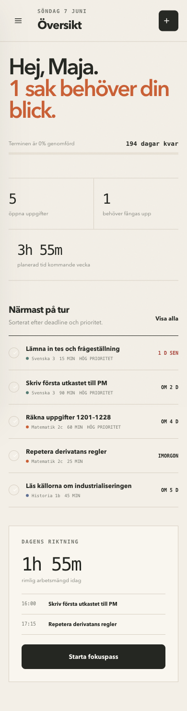
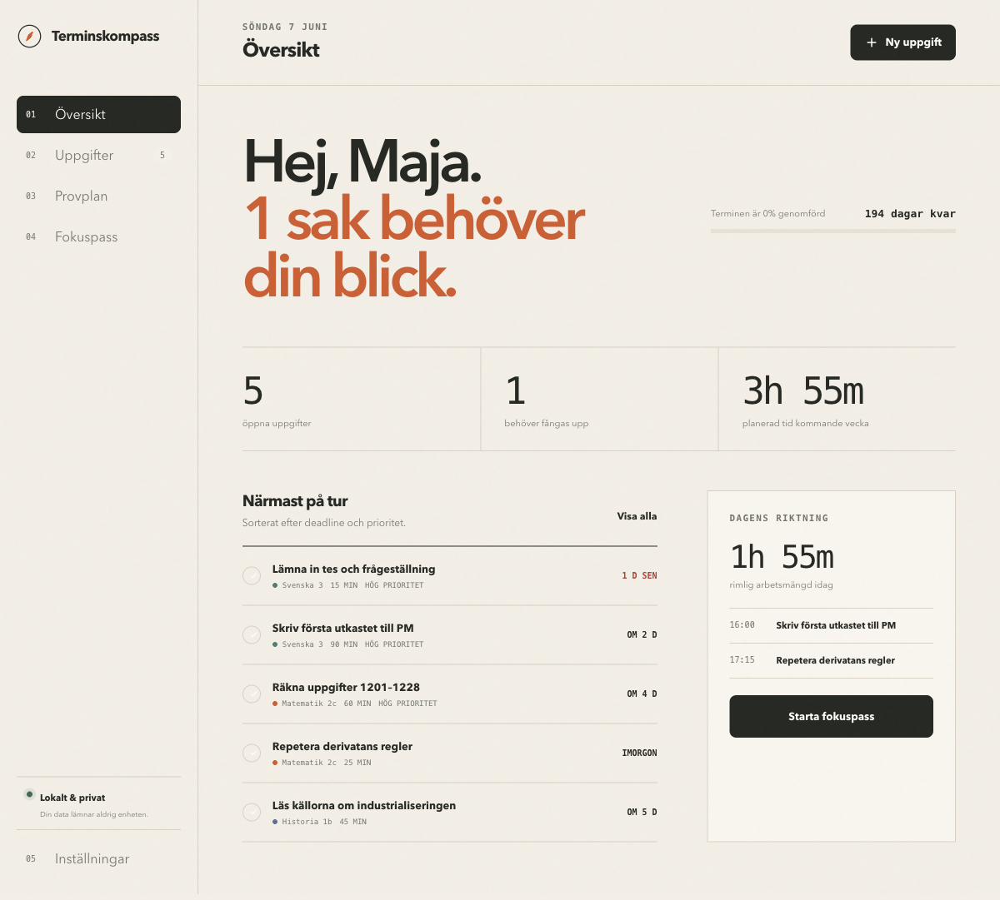
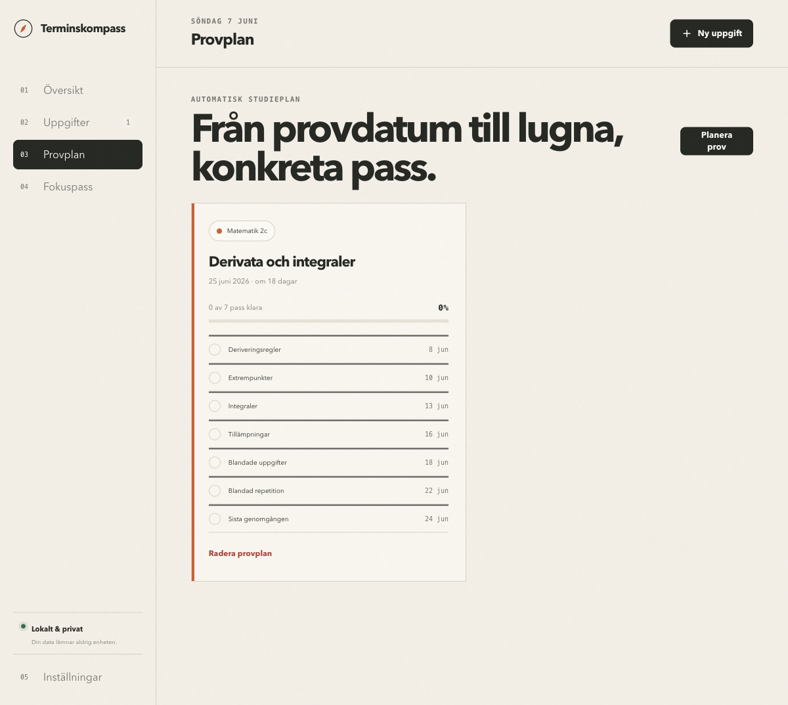

OFFLINE STUDIEPLANERARE · SVENSKA
En termin utan panikplanering.
Samla deadlines, dela upp prov i rimliga pass och fokusera på en sak i taget. Inget konto. Ingen spårning. Ingen månadskostnad.

PROBLEMET
Du behöver inte ännu en app som kräver mer av dig.
Kalendern visar när provet är. Den berättar inte vad du ska göra idag. Terminskompass gör om diffusa deadlines till en tydlig arbetsordning, utan notiser, sociala funktioner eller AI som läser ditt material.
Det är hela installationen.
PRODUKTEN
ÖVERSIKT
Se veckan innan den kör över dig.
Det viktigaste hamnar först. Du ser öppna uppgifter, saker som halkat efter och hur mycket tid veckan faktiskt kräver.

SÅ FUNGERAR DET
Från kaos till nästa konkreta steg.
-
01
Lägg in uppgiften
Välj ämne, deadline, tidsestimat och prioritet. Klart på mindre än en minut.
-
02
Planera provet
Skriv provdatum och momenten du behöver kunna. Appen fördelar passen över dagarna som finns.
-
03
Gör dagens del
Starta ett fokuspass och arbeta med den viktigaste saken, utan att hela terminen ligger öppen framför dig.

PROVPLAN
Sluta börja kvällen före.
Välj hur många dagar i veckan du vill plugga. Terminskompass sprider momenten över tiden och lämnar plats för blandad repetition och en sista genomgång.
- Studiedagar som passar din vecka
- Ett tydligt moment per pass
- Synlig framstegsmätare
BYGGD FÖR INTEGRITET
Ditt skolarbete är inte träningsdata.
Terminskompass har ingen server, ingen analyskod och inget konto. Uppgifter, provplaner och statistik sparas bara i din egen webbläsare. Du kan exportera en säkerhetskopia när du vill.
TERMINSKOMPASS 1.0
Ta kontroll över nästa termin.
Ett engångsköp. Använd på dina egna enheter så länge du vill.
- Obegränsade ämnen och uppgifter
- Automatiska provplaner
- Fokustimer och lokal statistik
- Backup och återställning
- Mac, Windows och Chromebook
Digital produkt · Personlig licens · Direkt nedladdning när checkout är ansluten
VANLIGA FRÅGOR
Innan du börjar.
Behöver jag installera något?
Nej. Packa upp mappen och dubbelklicka på index.html. Appen öppnas i Chrome, Edge, Safari eller Firefox.
Fungerar den på mobilen?
Ja, gränssnittet anpassar sig till mobil. För enklast lokal lagring rekommenderas dator eller Chromebook som huvudenhet.
Var sparas mina uppgifter?
I webbläsarens lokala lagring på din enhet. Exportera en backupfil under Inställningar innan du rensar webbläsardata eller byter enhet.
Är det en prenumeration?
Nej. Priset är ett engångsköp för version 1.0 och personlig användning.